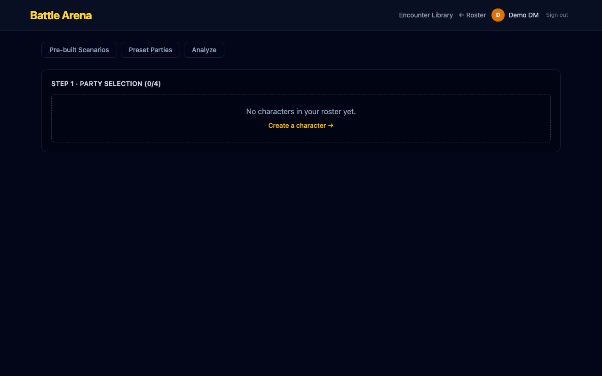
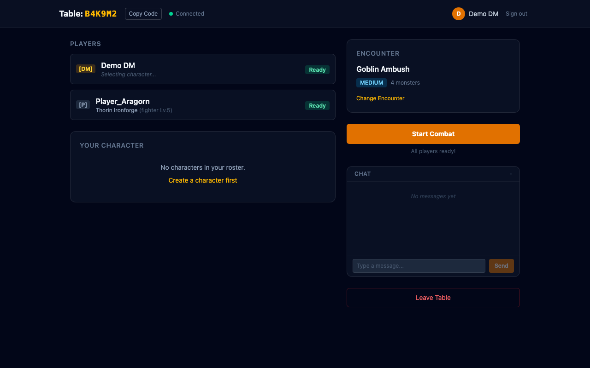

Feature branch: feat/phase-9b-multiplayer-combat | Closes #49–#56
Host-authoritative multiplayer combat. The DM client resolves all actions and broadcasts full CombatState snapshots to every player. Turn enforcement ensures only the active player can act, while everyone else watches in real time.
The battle page where players configure their party and encounter before entering combat. This same UI is used for both solo and multiplayer — the multiplayer layer adds state sync on top.

During multiplayer combat, the store tracks session status, ownership map (which player owns which units), and sequence numbers for state ordering. The DM resolves all actions host-side.

While combat is active, the lobby shows the session in combat status. The encounter card displays the selected scenario with difficulty badge. All participants remain connected via Realtime.

reaction_request with 30s timeout + auto-passsessionStatus === 'combat'